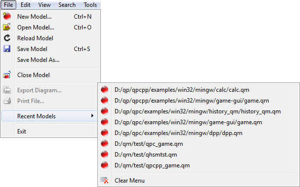
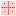

File Menu
| | New Model... | opens the New Model Dialog Box dialog. |
| | Open Model... | opens the "Open Model File" dialog. |
| | Save Model | saves the current model. Disabled if the model file is up to date. |
| Save Model As... | opens the "Save Model As" dialog and saves the model to the selected file, typically under a different name. |
| | Create Backups | see Automatically Create Model Backups |
| |
| | Export Diagram... | opens a file save dialog "Export diagram as SVG" and exports the current diagram in the Enhanced Windows Metafile vector format. Disabled if no diagram is currently active. |
| | Print File... | opens the "Print" dialog to print the active file or diagram. Disabled if no file or diagram is active. |
| |
| Recent Models | Opens a sub-menu with the list of most recent model files. |
| |
| Exit | Exits the application. |
Recent Models Sub-Menu

Recent Models sub-menu
| | <model-file> | opens the most recently used model. QM™ remembers up to 15 most recently used model files. |
Edit Menu
| | Undo | performs undo of the last model edit (see Undo/Redo) |
| | Redo | performs redo of the last model edit (see Undo/Redo) |
| |
| | Cut | deletes the selected text or model item and places it in the Clipboard. |
 | Copy | copies the selected text or model item into the Clipboard |
| | Paste | pastes the content of the Clipboard to the current model editor (file, diagram, or property sheet). Disabled if clipboard has no data or the data is in a format incompatible with the current view.. |
| |
| | Copy diagram | copies the selected elements of the current diagram to the Clipboard in the Scalable Vector Graphics (SVG) format. If no elements are selected the whole diagram is saved in the Clipboard. Disabled if no diagram is currently active. |
| |
| | Copy Link | copies a link to the Current Item to the Clipboard. |
| | Paste Link | selects a new Current Item based on the model-link stored in the Clipboard. Disabled if the Clipboard does not hold a valid item link. |
| |
| | Lock | Locks the Current Item from editing. Disabled if the current item cannot be locked. |
| | Unlock | Unlocks the Current Item for editing. Disabled if the current item cannot be unlocked. |
View Menu
| Style | selects the style of the QM™ user interface from the submenu. The selected style takes effect only after restarting QM™. |
| |
| | Explorer | shows (when checked) or hides the Model Explorer dock window |
| | Search | shows (when checked) or hides the Model Search dock window |
| | Property Editor | shows (when checked) or hides the Property Editor dock window |
| | Bird's Eye View | shows (when checked) or hides the Bird's Eye View dock window |
| | Log | shows (when checked) or hides the Log Console dock window |
| | Diagram Toolbox | shows (when checked) or hides the Diagram Toolbox toolbar |
| |
| | File | shows (when checked) or hides the File Toolbar |
| | Edit | shows (when checked) or hides the Edit Toolbar |
| | View | shows (when checked) or hides the View Toolbar |
| | Toolbox | shows (when checked) or hides the Diagram Toolbox |
| | Status Bar | shows (when checked) or hides the Status Bar |
| |
|  | Grid drop box | offers four grid styles for diagrams, including no grid. |
| |
| | Zoom Out | zooms out (makes smaller) the current diagram. Disabled if no diagram is currently active. |
| | Zoom In | zooms in (makes larger) the current diagram. Disabled if no diagram is currently active. |
| | Zoom to 100% | zooms the current diagram to 100% (1:1). Disabled if no diagram is currently active. |
Search Menu
| | Find Next | Finds the next occurrence of the search string. Disabled if no search string selected, or the search item searched to the end. |
| |
| | Match Case | When selected, case-sensitive matching will be applied. Otherwise, the matching will ignore the case |
| | Match Whole Words | When selected, only whole words (delimited by white space) will be matched. |
| | Match Exactly | |
| | Search Recursively | |
Tools Menu
The part of the Tools Menu with keyboard shortcuts F8-F12 is customizable by means of the Manage Tools Dialog Box. The following screen shot shows just an example of the Tools Menu, which might look differently in your system.
Window Menu
| | Subwindows | selects (when checked) the Subwindows mode of the Multiple Document Interface area. |
| | Tabs | selects (when checked) the Tabs mode of the Multiple Document Interface area. |
| |
| | Close | closes the currently active MDI subwindow or a tab. Disabled if all MDI windows are closed. |
| | Close All | closes all open MDI subwindows or tabs. Disabled if all MDI windows are closed. |
| |
| | Tile | Tiles all open MDI subwindows. Disabled in the Tabs view or if all MDI windows are closed. |
| | Cascade | Cascades all open MDI subwindows. Disabled in the Tabs view or if all MDI windows are closed. |
| |
| | Next | Activates the next MDI window. Disabled if all MDI windows are closed. |
| | Previous | Activates the previouis MDI window. Disabled if all MDI windows are closed. |
| |
| | window-title | activates the given MDI-window. This part of the Window menu lists all open MDI windows by window title.. |
Help Menu
| | Help Location | Opens a sub-menu for location of the help. Options are: Online Help, which uses help from state-machine.com/qm, and Offline Help, which uses help from the local directory <qm>/help on your disk. (NOTE: the Online Help might contain a more complete, updated help than the local help.) |
| |
| | Help Contents | opens the default web browser at state-machine.com/qm |
| | Help Context | opens the context-sensitive help in the default web browser. Context-sensitive help is really intended to be used via the shortcut Ctrl+F1. You place you mouse pointer on any part of the QM™ user interface and press Ctrl+F1. This opens the specific help page for the pointed element. |
| | QM Homepage | opens the default web browser at state-machine.com/qm |
| | Free Support Forum | opens the default web browser at Free Support Forum |
| |
| | QM License | shows a window with the text of the QM™ License agreement. |
| |
| | About QM | shows information about QM™, such as version, copyright, short description, and Qt commercial license number. |
| | About Qt | shows information about the Qt Toolkit, such as the current Qt version used by QM™ and the Qt licensing options. |
Next: Toolbars